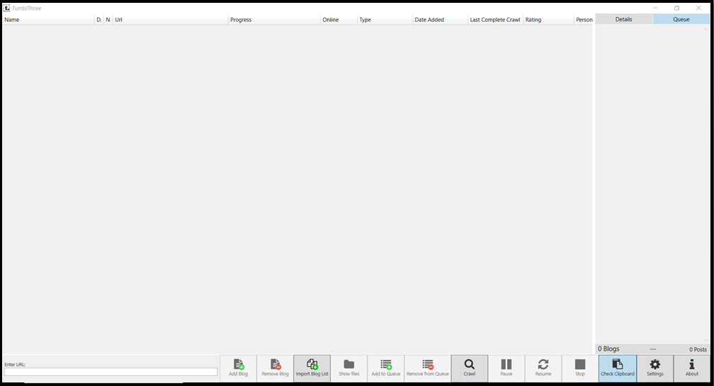
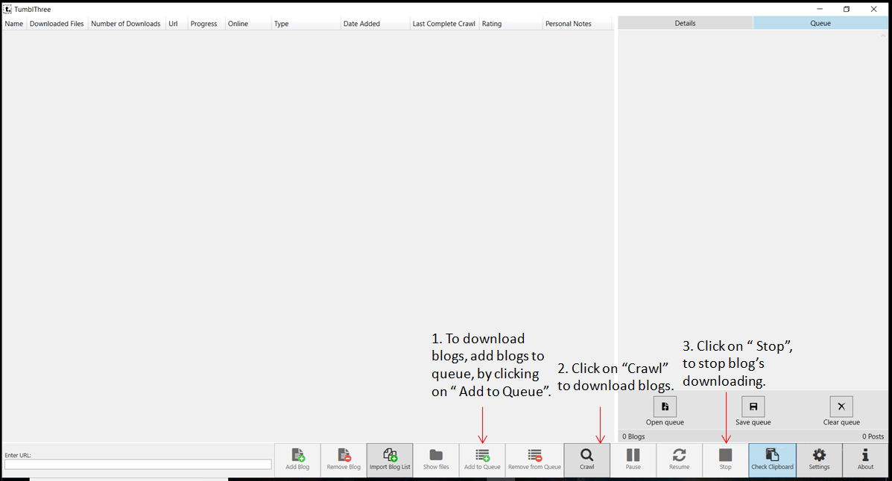
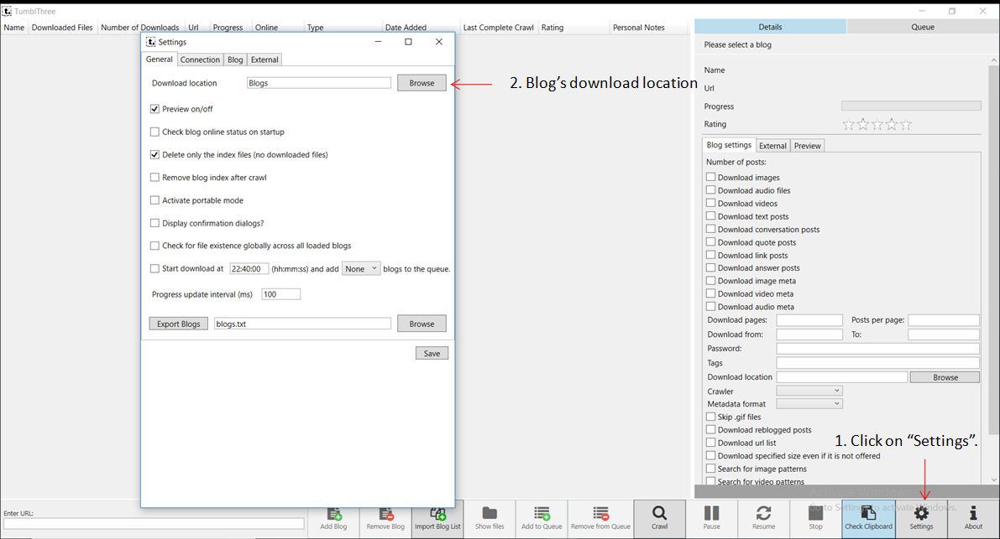

Getting Started
TumblThree is a free and open source Tumblr blog backup application. It downloads photo, video, audio and text posts from a given tumblr blog. It is the code rewrite of TumblTwo, using the Win Application Framework (WAF) and C# with WPF and the MVVM pattern.
Features
- Source code at GitHub (Written in C# using WPF and MVVM).
- Multiple concurrent downloads of a single blog.
- Multiple concurrent downloads of different blogs.
- Internationalization support (currently available: en, de, es, fr, ru, zh).
- Downloads the queue.
- Auto saves the queue list.
- Save, clear and restore the queue list.
- Clipboard monitor - detects blogname.tumblr.com urls in the clipboard (copy and paste) and automatically adds the blog to the bloglist.
- A settings panel:
- Change download location
- Turn preview off/on
- Define number of concurrent downloads
- Set the image size of downloaded pictures
- Set download defaults
- Enable portable mode
- Uses Windows proxy settings.
- It allows to set an http proxy.
- A bandwidth throttler.
- An option to download an url list instead of the actual files.
- Set a start time for an automatic download (e.g. during nights).
- An option to skip the download of a file if it has already been downloaded before in any currently added blog.
- Change the blog settings of multiple selected blogs at once.
- Uses SSL connections.
- Preview of photos & videos.
- Taskbar buttons and key bindings.
- File rename functionality.
-
Blog backup/download:
- Download photo, video (only tumblr.com hosted), text, audio, quote, conversation, link and question posts.
- Download meta information for photo, video and audio posts.
- Download inlined photos and videos (e.g. photos embedded in question & answer posts).
- Download of all image sizes possible (SVC, API only for newer blogs, higher resolution not possible for old blogs *1).
- Support for downloading Imgur, Gfycat, Webmshare, Mixtape, Lolisafe, Uguu, Catbox and SafeMoe linked files in tumblr posts.
- Download safe mode/NSFW blogs.
- It allows downloading only original content of the blog and skipping reblogged posts.
- You can download only tagged posts.
- You can download only specific blog pages instead of the whole blog.
- It allows downloading blog posts in a defined time span.
- You can download hidden blogs (login required / dash board blogs).
- You can download password protected blogs (of non-hidden blogs).
-
"Liked by" backup/download:
- A downloader for downloading "liked by" photos and videos instead of a tumblr blog (e.g. https://www.tumblr.com/liked/by/wallpaperfx/) (login required).
- Download all image sizes possible (SVC, API only for newer blogs, higher resolution not possible for old blogs *1).
- It allows downloading posts in a defined time span.
-
"Tumblr search" backup/download:
- A downloader for downloading photos and videos from the tumblr search (e.g. http://www.tumblr.com/search/my+keywords).
- Download all image sizes possible (SVC, API only for newer blogs, higher resolution not possible for old blogs *1).
- You can download only specific blog pages instead of the whole blog.
-
"Tumblr tag search" backup/download:
- A downloader for downloading photos and videos from the tumblr tag search (e.g. http://www.tumblr.com/tagged/my+keywords) (login required).
- Download of all image sizes possible (SVC, API only for newer blogs, higher resolution not possible for old blogs *1).
- It allows downloading posts in a defined time span.
Program Usage:
- Extract the .zip file and run the application by double clicking TumblThree.exe.
-
How to add a blog?
- Copy the url of any tumblr.com blog you want to backup from,in the textbox at the bottom left. Afterwards,click on "Add Blog".
- If you copy (ctrl-c) a tumblr.com blog url from the address bar/text file, the clipboard monitor from TumblThree will detect it and automatically add the blog.
-
How to download a blog?
- To start the download process, click on "Crawl".
- The application will regularly check for (new) blogs in the queue and starts processing them, until you stop the application by pressing "Stop".
- You can add blogs to the queue via "Add to Queue" or double click/drag n drop first and then click "Crawl", or you start the download process first and add blogs to the queue afterwards.
 -
How to detect state of the blog?
- A light blue bar,left to the blog in the queue indicates an actively downloading blog.
- The blog manager on the left side also indicates the state of each blog:
- A red background shows an offline blog.
- A green background shows an actively crawling blog.
- A purple background shows an enqueued blog.
- Settings:
- Change the download location
- Number of concurrent connections
- Default backup settings for newly added blog
- "Details" window:
- View statistics of your blog and set the blog specific options.
- Check the post type (photo,video,audio,text,conversation,quote,link) to download.
How to download only tagged posts?
- Add the blog url.
- Open the blog in the "Details" tab.
- Enter the tags in the "Tags"textbox in a comma separated list without the leading hash (#) sign.(e.g. great big car, bears would search for images that are tagged for either a great big car or bears or both.)
-
How to download password protected blogs?
- Add the blog url.
- Open the blog in the "Details" tab, enter the password in the "Password" textbox.
-
How to download hidden blogs (login required blogs)?
- Go to "Settings," click on the "Connection" tab and fill in your tumblr email address in "tumblr login" and "tumblr password" textbox.
- Click on the "Authenticate" button. If the login was successful, the label will change and display your email address (The email address and password are not stored locally on disk but cookies are generated and saved in %LOCALAPPDATA%\TumblThree in json format).
- Add the blog url.

-
How to download "liked" photos and videos?
- Go to "Settings," click on the "Connection" tab and fill in your tumblr email address in "tumblr login" and "tumblr password" textbox.
- Click the "Authenticate" button. If the login was successful, the label will change and display your email address (The email address and password are not stored locally on disk but cookies are generated and saved in %LOCALAPPDATA%\TumblThree in json format).
- Add the blog url including the liked/by string in the url. (e.g. https://www.tumblr.com/liked/by/wallpaperfx/).
-
How to download your own likes?
Make sure you have (temporarily) enabled the following options in your blogs settings:
(i.e. https://www.tumblr.com/settings/blog/yourblogname):- Likes -\> Share posts you like (to enable the publicly visible liked/by page).
- Visibility -\> blog is explicit (to see/download NSFW likes).
-
How to download photos and videos from the tumblr search?
- Add the search url including your key words separated by plus signs (+) in
the url
(e.g. https://www.tumblr.com/search/my+special+tags).
- Add the search url including your key words separated by plus signs (+) in
the url
-
How to download photos and videos from the tumblr tag search?
- Go to "Settings," click on the "Connection" tab and fill in your tumblr email address in "tumblr login" and "tumblr password" textbox.
- Click the "Authenticate" button. If the login was successful, the label will change and display your email address (The email address and password are not stored locally on disk but cookies are generated and saved in %LOCALAPPDATA%\TumblThree in json format).
- Add the search url including your tags separated by plus signs (+) in the
url
(e.g. https://www.tumblr.com/tagged/my+special+tags).
Further Insights:
The default settings should cover most users. You should change the download location and the kind of posts you want to download. For this, in the Settings (click on the "Settings" button in the lower panel of the main user interface) you might want to change:
- General -\> Download location: Specifies where to download the files. The default is in a folder Blogs relative to the TumblThree.exe 
- Blog -\> Settings applied to each blog upon addition:
- Here you can set what posts, newly added blogs will download per default.
- To change what each blog downloads, click on a blog in the main interface.
- Select the "Details" tab on the right and change the settings.
- This separation allows downloading different kind of post for different blogs.
- You can change the download settings for multiple existing blogs by selecting them with "shift+left click" for a range or "ctrl-a" for all of them.
- Here you can set what posts, newly added blogs will download per default.
- Settings you might want to change if the download speed is not
satisfactory:
- Connection -\> Concurrent connections: Specifies the number of connections used for downloading posts. The number is shared between all actively downloading blogs.
- Connection -\> Concurrent video connections: Specifies the number of connections used for downloading tumblr video posts. The vt.tumblr.com host regularly closes connections if the number is too high. Thus, the maximum number of vt.tumblr.com connections can be specified here independently.
- Connection -\> Concurrent blogs: Number of blogs to download in parallel.
- Most likely you don't have to change any of the other connection settings. In
particular, settings you should never change, unless you're sure that you know what you
are doing.
- Connection -\> Limit Tumblr Api Connections: Leave this checkbox checked and do not change the corresponding values of 90 connections per 60 seconds. If you still change them, you might end up with offline blogs or missing downloads.
- Application settings are stored in C:\Users\Username\AppData\Local\TumblThree.
- You can use the portable mode (settings-\>general) to stores the application settings in the same folder as the executable.
- For each blog there is also a database (serialized class) file in the "Index" folder of the download location named after the blogname.tumblr. Here blog relative information is stored like what files have been downloaded, the url of the blog and when it was added. This allows you to move your downloaded files (photos, videos, audio files) to a different location without interfering with the downloading process.
- Some settings aren't hooked up to the graphical user interface. It's possible to view all TumblThree settings by opening the settings.json in any editor located in C:\Users\Username\AppData\Local\TumblThree. Their names should be self explainatory.
- Some notable settings to further fine tune the application include:
- It allows to set the buffer size for downloading binary files (photos, videos) in multiples of 4KB. The default is 2MB, thus the buffer size has a value of 512.
- Increasing this value reduces disk fragmentation as more of the file is kept in the memory before it gets written out to the disk but increases the memory usage.
- Sets the maximum number of retries if a tumblr server forcefully closes the connection. This might regularly happen on the tumblr video host (vt.tumblr.com) if too many connections were opened in parallel.
- After the limit is exhausted, the file is left truncated, but is also not registered as a successful downloaded. Thus, the file can be resumed in the next crawl.
-
Buffer Size:
Max Number of Retries:
Download:
- Application downloads for Windows at Github.com
- Source code at Github.com (Written in C# using WPF and the MVVM pattern).
Feedback
- For questions, bug reports and feature requests go to our Issues section. Further information can also be found in the TumblThree Wiki.